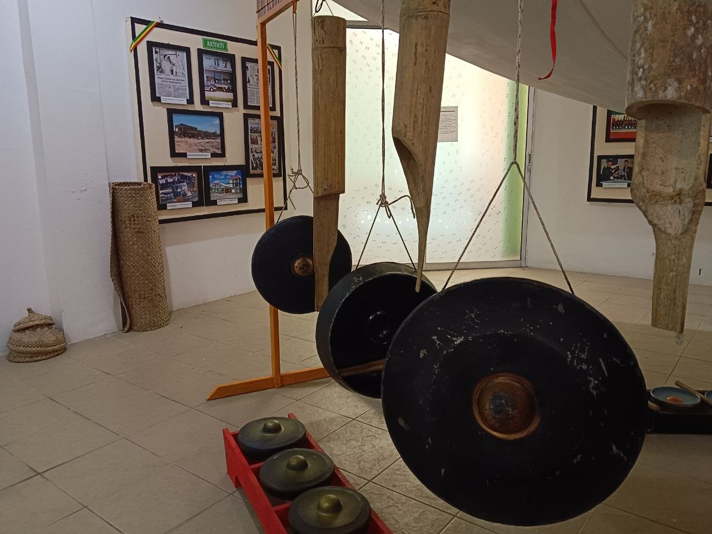
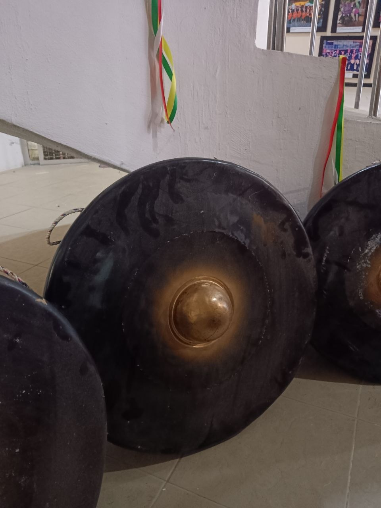
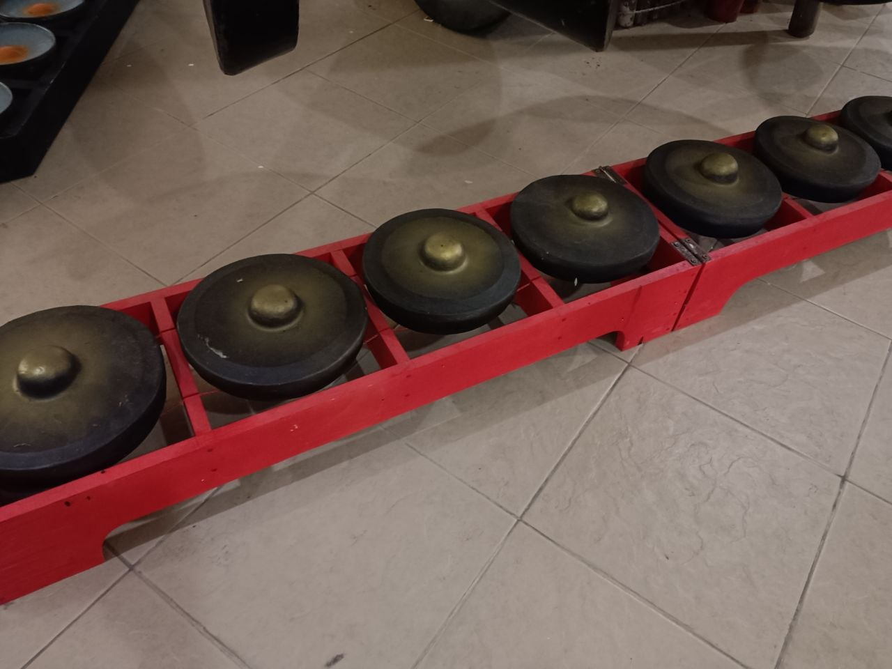
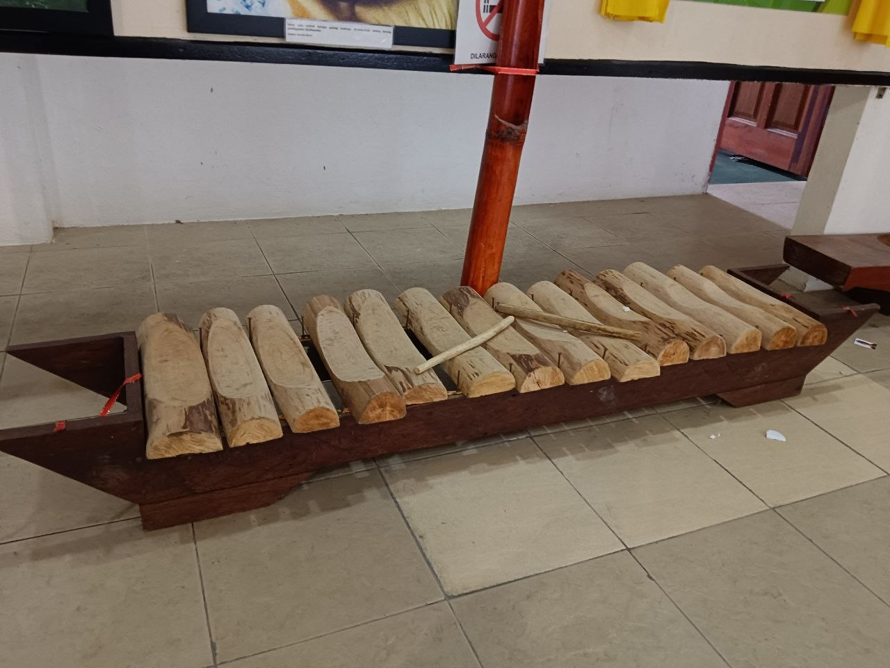
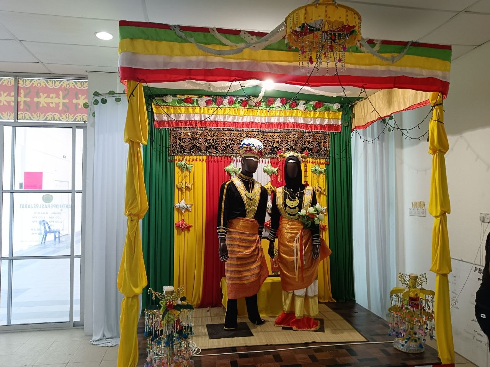
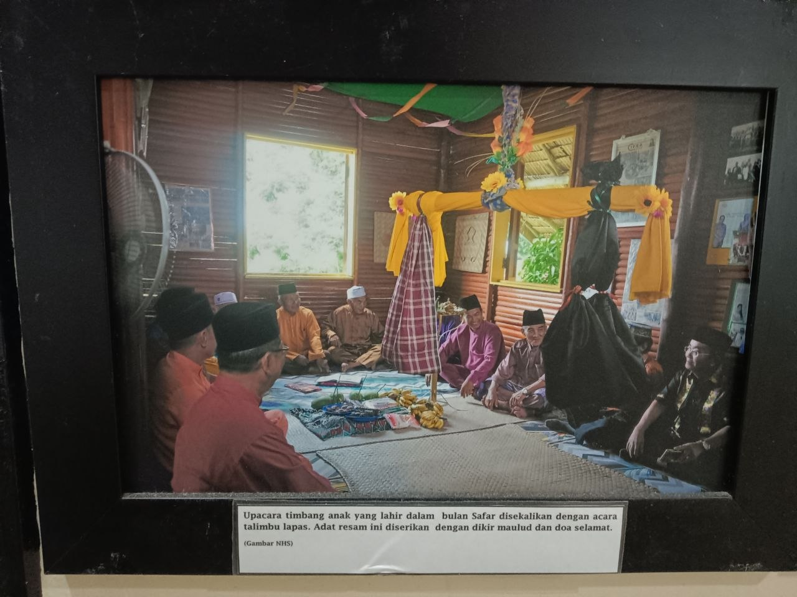

Identiti masyarakat
Warisan membantu komuniti mengenali asal usul dan ciri budaya yang membentuk identiti mereka.
Jati diriMenelusuri warisan sejarah dan budaya masyarakat Bisaya di Daerah Beaufort, Sabah serta memahami tanggungjawab bersama untuk mewariskannya kepada generasi akan datang.

Warisan sejarah tempatan merangkumi peninggalan, amalan, pengetahuan, cerita lisan dan tradisi yang diwarisi dalam sesebuah komuniti. Warisan ini membantu menjelaskan cara hidup masyarakat serta perubahan yang berlaku dari satu generasi ke generasi seterusnya.
Laman web ini memberi tumpuan kepada masyarakat Bisaya di Daerah Beaufort, Sabah. Kajian yang lengkap perlu menggabungkan sumber bertulis, rekod institusi dan keterangan komuniti supaya maklumat yang dipaparkan tepat serta menghormati pemilik warisan.
Warisan bukan hanya objek atau bangunan. Ia turut merangkumi ilmu, bahasa, amalan dan ingatan bersama yang membentuk identiti komuniti.
Warisan membantu komuniti mengenali asal usul dan ciri budaya yang membentuk identiti mereka.
Jati diriDokumentasi dan perkongsian cerita tempatan memberi peluang kepada pelajar mempelajari sejarah melalui konteks komuniti.
PengetahuanUsaha pewarisan membantu pengetahuan dan amalan budaya terus difahami oleh generasi baharu.
Antara generasiAktiviti mendokumentasikan sejarah dapat menggalakkan kerjasama antara penduduk, sekolah dan penyelidik.
KerjasamaCatatan yang teratur membantu mengurangkan risiko kehilangan maklumat apabila sumber lisan semakin sukar ditemui.
DokumentasiPendedahan yang tepat boleh meningkatkan rasa hormat terhadap kepelbagaian sejarah dan budaya tempatan.
KesedaranKajian ini bertujuan untuk menelusuri kebudayaan dan kesenian masyarakat Bisaya di daerah Beaufort, Sabah.
Suku kaum Bisaya mempunyai muzik dan tarian dan nyanyian tersendiri. Selain itu, suku kaum Bisaya juga mempunyai alat-alat muzik tersendiri seperti kulintangan dan gambang. Kulintangan merupakan muzik yang amat popular dalam kalangan masyarakat Bisaya sama seperti masyarakat peribumi Sabah yang lain iaitu suku Dusun. Selain itu, kaum Bisaya juga mempunyai nyanyian tersendiri yang dikenali sebagai badaup (Low et al., 2004).
Masyarakat Bisaya merupakan salah satu kelompok masyarakat peribumi yang mempunyai kebudayaan dan kesenian yang tersendiri di Sabah, khususnya di daerah Beaufort. Namun demikian, penelitian yang memberikan tumpuan khusus terhadap kebudayaan dan kesenian masyarakat Bisaya di daerah Beaufort masih perlu diperkembangkan dan dihuraikan bagi memperoleh gambaran yang lebih menyeluruh tentang kebudayaan dan kesenian masyarakat tersebut dalam konteks sejarah tempatan kerana pada masa kini terdapat beberapa generasi muda yang memandang enteng terhadap kepentingan sejarah tempatan. Oleh itu, kajian sejarah tempatan ini dilaksanakan untuk menelusuri kebudayaan dan kesenian masyarakat Bisaya di daerah Beaufort, Sabah. Penelitian terhadap topik tersebut penting bagi memberikan pemahaman yang lebih jelas agar dapat memberikan lebih pendedahan kepada generasi muda yang kurang mengetahui tentang kebudayaan dan kesenian kaum Bisaya di daerah Beaufort, Sabah dalam tempoh kajian, disamping menyumbang kepada usaha merekod dan memelihara sejarah serta warisan masyarakat peribumi di Sabah.
1. Mengenal pasti dan menghuraikan warisan kebudayaan kaum Bisaya di daerah Beaufort, Sabah. 2. Mengkaji bentuk-bentuk kesenian tradisional kaum Bisaya yang masih diamalkan oleh masyarakat setempat. 3. Menganalisis usaha-usaha yang dilakukan untuk memelihara dan mempromosikan kebudayaan serta kesenian kaum Bisaya kepada generasi muda.
Berikut ialah isu umum yang berlaku dikalangan generasi muda dalam konteks memelihara warisan kebudayaan dan kesenian kaum
Generasi muda lebih cenderung kepada hiburan moden berbanding kebudayaan tradisional. Hal ini menyebabkan seni tari, muzik dan adat resam kaum semakin kurang diamalkan.
Sebahagian generasi muda kurang memahami sejarah dan kepentingan warisan kaum mereka. Kesannya, mereka kurang menghargai budaya yang diwarisi daripada nenek moyang.
Pendedahan kepada budaya luar melalui media sosial dan hiburan boleh menyebabkan generasi muda lebih mengutamakan budaya asing berbanding warisan tradisional kaum sendiri.
Warisan yang tidak direkodkan dalam bentuk tulisan, gambar atau video berisiko dilupakan apabila golongan tua yang mengetahui sejarah dan amalan tradisional tiada lagi untuk mewariskannya.
Kaedah untuk mendapat maklumat berkenaan warisan kebudayaan dan kesenian kaum Bisaya di daerah Beaufort.
Analisis dokumen merupakan kaedah pengumpulan maklumat melalui sumber bertulis seperti buku, jurnal, artikel dan dokumen sejarah yang berkaitan dengan warisan sejarah masyarakat Bisaya di Daerah Beaufort, Sabah. Kaedah ini membantu pengkaji memperoleh maklumat tentang sejarah, kebudayaan dan kesenian masyarakat Bisaya daripada sumber yang boleh dipercayai./p>
Pemerhatian di Pusat Kebudayaan dan Kesenian kaum Bisaya dilakukan untuk melihat secara langsung warisan tradisional masyarakat Bisaya, seperti pakaian, alat muzik, tarian dan kraftangan. Kaedah ini membantu pengkaji memahami keunikan kebudayaan serta mengenal pasti usaha memelihara warisan masyarakat Bisaya di Daerah Beaufort, Sabah.
Imej di bawah ialah gambar ilustrasi bertema alam dan budaya, bukan bukti khusus tentang masyarakat Bisaya. Gantikan dengan foto kajian sebenar yang mempunyai kapsyen dan kebenaran penggunaan.






Pelaksanaan aktiviti kumpulan dan dokumentasi setiap peringkat.
Kumpulan kami memilih tajuk berkaitan warisan kebudayaan dan kesenian kaum Bisaya di daerah Beaufort.
Sumber yang digunakan mempunyai maklumat berkaitan dengan tajuk yang dipilih.
Sebelum menggunakan maklumat yang diperoleh, kami melakukan analisis untuk memastikan kebolehpercayaan dan relevansinya.
Laman web ini dibangunkan dengan menggunakan teknologi web moden dan memastikan kemudahan aksesibiliti.
Gunakan sumber yang benar-benar dirujuk. Senarai di bawah ialah panduan tempat mencari bahan, bukan senarai sumber yang telah digunakan untuk mengesahkan semua kandungan laman ini.
Untuk mencari buku, penerbitan dan bahan bibliografi berkaitan sejarah serta budaya Malaysia.
Lawati laman rasmi ↗Semak koleksi, penerbitan dan maklumat institusi berkaitan sejarah serta warisan Sabah.
Semak laman rasmi ↗Tempat untuk menyiasat rekod arkib dan bahan dokumentari yang boleh membantu kajian sejarah.
Lawati laman rasmi ↗Low, K. K., Cheang, S. C., Lokman, A. S., Atin, V. P., Lukin, S. A. H., Porodong, P., Mahali, S. N. H., Setia, J. A., Bandira, D. A., Mustajab, M. S. H., Amat, A., Ibrahim, I., Tamrin, K. M., Osman, S. S., & Mat Kib, M. Z. (2004). Warisan budaya Sabah: Etnisiti dan masyarakat. Universiti Malaysia Sabah. Ahmat Adam. (2001, 5 November). Identiti dan citra Melayu dalam sejarah bangsa rumpun Melayu. New Sabah Times. Amin Sweeney. (1968). Silsilah Raja-raja Brunei, Text of Manuscript B. JMBRAS, 41. Asmah Hj. Omar. (1993). Susur galur bahasa Melayu. Dewan Bahasa dan Pustaka. Bantong Antaran. (1993). Brunei Dusun. The Brunei Museum Journal, 8, 13. Bewsher, R. A. (1965). Some Bisaya account of early settlements in the Philippines recorded by Father Santaren. Sarawak Museum Journal, 7, 49. Daftar kata bahasa Bisaya-Bahasa Melayu (Edisi pertama). (2000). Biro Pendidikan, Persatuan Bisaya Bersatu Sabah. Harrisson, T. (1976). Bisaya in North Borneo and elsewhere. Sabah Society Journal, 1. Jones, L. W. (1960). North Borneo report on the census population. Arkib Negeri Sabah. Mustaffa Omar. (1993). Bisaya: Suatu tinjauan ringkas. The Brunei Museum Journal, 9, 20–21. Pelita Bisaya. (1999, 6 Jun). Buletin sempena Mesyuarat Agung Persatuan Bisaya Bersatu Sabah kali ke-10. Rekod keahlian dan aktiviti kebudayaan Bisaya. (t.t.). Persatuan Bisaya Bersatu Sabah. Roth, Henry Ling. (1980). The natives of Sarawak and British North Borneo. University of Malaya Press. Whelan, F. G. (1970). A history of Sabah. Heinemann Educational Books.
Pemeliharaan warisan sejarah tempatan memerlukan penyelidikan yang teliti, dokumentasi yang bertanggungjawab dan kerjasama dengan komuniti. Dengan sumber yang sahih dan penyampaian yang jelas, laman web ini boleh menjadi ruang pembelajaran untuk mengenali serta menghargai sejarah masyarakat Bisaya di Beaufort.